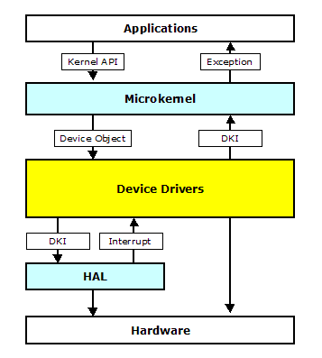
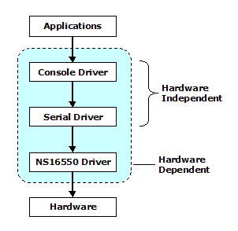
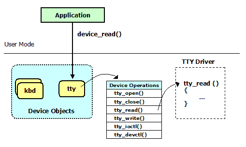
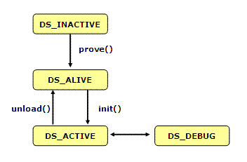
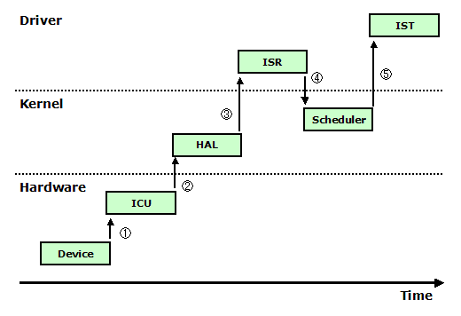

|
|
An Open Source, Royalty-free, Real-time Operating System |
Prex Home >
Document Index >
Driver Development Guide
|
|||
Prex Home >
Document Index >
Driver Development Guide
|
|||
This document describes how to write a device driver for Prex.
The following documents will be helpful to understand more features of Prex.
When Prex task accesses to the raw device, it calls kernel API for device I/O operations. A microkernel dispatches the I/O request from application to the device driver associated to the target device object. The microkernel provides driver helper service named driver-kernel interface (DKI). DKI includes the interface to the hardware abstraction layer (HAL) which provides the platform dependent functions to handle timer, interrupt or power circuit.
The following figure illustrates the Prex I/O model.

Figure 1. Kernel I/O Components
Prex provides two different driver helper interface:
The interface between device drivers and the Prex kernel has been standardized and documented in the reference manual named "Prex Driver-Kernel Interface".
Prex supports layered driver architecture. Almost all devices are serviced by a chain of drivers, typically called a driver stack. Each driver in the stack isolates some hardware-dependent features from the drivers above it.

Figure 2. Driver Stack
The interface in the driver stack is defined as unique interface depends on each device class.
The softc (software context) structure stores all private data for the target device. The driver framework allocates a block of memory for the softc structure for each device instance. The softc structure is only accessed within the driver, so its definition is local to the driver.
The following is an example about the private data for the 'foo' device.
struct foo_softc {
device_t dev; /* device object */
...
};
Usually, the device object for the target device is stored in the softc structure because it is needed to destroy the device object at a later time.
The Prex DKI provides the interface to create, refer and destroy these device private data.
If the driver need to publish the I/O interface for user applications, it must define the devops (device operations) structure. The devops structure enables the kernel to find the I/O entry points of the device driver. The interface to the driver is constant and is defined statically inside the driver.
static struct devops foo_devops = {
/* open */ foo_open,
/* close */ foo_close,
/* read */ foo_read,
/* write */ foo_write,
/* ioctl */ foo_ioctl,
/* devctl */ foo_devctl,
};
Each device driver must define the driver object properly. The driver framework maintains the list of the driver object, and uses it to find the driver for initialization or shutdown.
struct driver foo_driver = {
/* name */ "foo",
/* devops */ &foo_devops,
/* devsz */ sizeof(struct foo_softc),
/* flags */ 0,
/* probe */ foo_probe,
/* init */ foo_init,
/* unload */ foo_unload,
};
Note: Set NULL if probe/init/unload routine is not needed.
The device object represents a physical device or logical/virtual device. It is created by the device driver to communicate with applications or another device driver. A microkernel maintains the name space for the device objects.

Figure 3. Device Object
The device object can be created by the following kernel service.
device_t dev; dev = device_create(self, "foo", D_CHR);
If the driver manages multiple devices, it can creates any number of device objects. In this case, the name of each device object must have an instance number at the tail of the name. The instance number should be zero-based (ex. "foo0", "foo1", ...).
A pointer to the device private data can be obtained from the device object by calling device_read().
struct foo_softc *sc; sc = device_private(dev);
Most Unix-like operating systems treat every hardware device as a file. This design allows applications to access without getting technical details about hardware. Prex also supports the device-special file as POSIX emulation.
In case of Prex, the device file is handled by the file system server in the user mode. So, an application will send an I/O request IPC message to the file system server instead of calling kernel API for device access. The device file system (devfs) maps each device object to the device file under /dev directory.
[prex:/dev]# ls -l b--------- 1 prex Nov 9 2009 12:00 0 fd0 b--------- 1 prex Nov 9 2009 12:00 0 ram0 crw------- 1 prex Nov 9 2009 12:00 0 zero crw------- 1 prex Nov 9 2009 12:00 0 null crw------- 1 prex Nov 9 2009 12:00 0 rtc c--------- 1 prex Nov 9 2009 12:00 0 cpufreq crw------- 1 prex Nov 9 2009 12:00 0 vga crw------- 1 prex Nov 9 2009 12:00 0 kbd crw------- 1 prex Nov 9 2009 12:00 0 tty crw------- 1 prex Nov 9 2009 12:00 0 console c--------- 1 prex Nov 9 2009 12:00 0 pm total 11 [prex:/dev]#
During system bootstrap, the driver framework searches the system for devices. For each device driver, its probe routine is called to check the existence of target device. The argument for the probe routine is a pointer to the driver structure.
static int
foo_probe(struct driver *self)
{
...
}
If the device is not available for some reasons, it should return ENXIO. Otherwise, it returns 0 for success. If the probe routine returns an error, the driver framework mark it as inactive and does not call any routnies in that driver.
If the driver does not provide the probe routine, we assume the target device is avilable at anytime.
The probe routine is used only for checking the device availability. So, we can not assume the probe routine programs the device hardware before the initliaze routine described below.
The driver framework will call each probe() routine for all drivers at first. Next, the driver framework calls an init() routine of the driver which returns 0 for probe() routine.
static int
foo_init(struct driver *self)
{
...
}
In general, the init() routine will do the following jobs:
The driver state will be change as following figure:

Figure 4. Driver State
T.B.D.
static int
foo_open(device_t dev, int mode)
{
...
}
static int
foo_close(device_t dev)
{
...
}
T.B.D.
static int
foo_read(device_t dev, char *buf, size_t *nbyte, int blkno)
{
...
}
static int
foo_write(device_t dev, char *buf, size_t *nbyte, int blkno)
{
...
}
T.B.D.
static int
foo_ioctl(device_t dev, u_long cmd, void *arg)
{
...
}
T.B.D.
static int
foo_devctl(device_t dev, u_long cmd, void *arg)
{
...
}

Figure 4. Interrupt Processing
irq_t irq_attach(int irqno, int prio, int shared, int (*isr)(void *), void (*ist)(void *), void *data);
The driver name must be unique in the system, and it should be same name with the name of the driver source file in order to identify them easily. For example, the device driver named "ramdisk" will be put to the file named "ramdisk.c".
The driver name may only contain alphanumeric and has a maximum length of 16 characters.
Every device driver must include the common driver header file.
#include <driver.h>
Since the ramdisk driver does not handle an actual device hardware, it just holds information about the ramdisk image.
struct ramdisk_softc {
device_t dev; /* device object */
char *addr; /* base address of image */
size_t size; /* image size */
};
The ramdisk driver supports only read() and write() operations.
static struct devops ramdisk_devops = {
/* open */ no_open,
/* close */ no_close,
/* read */ ramdisk_read,
/* write */ ramdisk_write,
/* ioctl */ no_ioctl,
/* devctl */ no_devctl,
};
struct driver ramdisk_driver = {
/* name */ "ramdisk",
/* devops */ &ramdisk_devops,
/* devsz */ sizeof(struct ramdisk_softc),
/* flags */ 0,
/* probe */ ramdisk_probe,
/* init */ ramdisk_init,
/* unload */ NULL,
};
The ramdisk driver will check whether the disk image is loaded by boot loader. It returns ENXIO if it can not find the disk image.
static int
ramdisk_probe(struct driver *self)
{
struct bootinfo *bi;
struct physmem *phys;
machine_bootinfo(&bi);
phys = &bi->bootdisk;
if (phys->size == 0) {
return ENXIO;
}
return 0;
}
static int
ramdisk_init(struct driver *self)
{
struct ramdisk_softc *sc;
struct bootinfo *bi;
struct physmem *phys;
device_t dev;
machine_bootinfo(&bi);
phys = &bi->bootdisk;
dev = device_create(self, "ram0", D_BLK|D_PROT);
sc = device_private(dev);
sc->dev = dev;
sc->addr = (char *)ptokv(phys->base);
sc->size = (size_t)phys->size;
return 0;
}
static int
ramdisk_read(device_t dev, char *buf, size_t *nbyte, int blkno)
{
struct ramdisk_softc *sc = device_private(dev);
int offset = blkno * BSIZE;
void *kbuf;
size_t nr_read;
DPRINTF(("ramdisk_read: buf=%x nbyte=%d blkno=%x\n",
buf, *nbyte, blkno));
/* Check overrun */
if (offset > (int)sc->size) {
DPRINTF(("ramdisk_read: overrun!\n"));
return EIO;
}
nr_read = *nbyte;
if (offset + nr_read > (int)sc->size)
nr_read = sc->size - offset;
/* Translate buffer address to kernel address */
if ((kbuf = kmem_map(buf, nr_read)) == NULL) {
return EFAULT;
}
/* Copy data */
memcpy(kbuf, sc->addr + offset, nr_read);
*nbyte = nr_read;
return 0;
}
You can add new driver into system by using "device" option in the platform configureation file under /conf. The order of device options indicates the driver initialization order. So, it's important to put the device option with appropriate order considering for the driver dependency.
device pm # Power management device i8237 # I8237 DMA controller device cons # System console device wscons # Workstation console device pckbd # PC/AT Keyboard (P:wscons) device vga # VGA video (P:wscons) device cpufreq # CPU frequency control device est # Intel enhanced speedstep (P:cpufreq) device rtc # Logical RTC device mc146818 # MC146818 Real time clock (P:rtc) device null # NULL device device zero # Zero device device fdd # Floppy disk drive device ramdisk # RAM disk <== Add!!